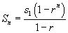
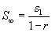
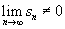
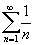
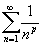

This device cannot display Java animations. The above is a substitute static image
1. Arithmetic series
s1 and d set to generate odd integers. On this applet, the sequence is shown as rectangles of width 1, somewhat reminiscent of a
Riemann sum. The first term of this sequence is 1 so the first rectangle is 1 by 1 wide. The second term in our example is 3 so the next rectangle is 3 high by 1 wide, the third term is 5 high by 1 wide and so on.
The dots on this graph represent the different finite series, each being the sum of the terms of the sequence up to that point. From a visualization standpoint, think of the height of each dot as being the total area of all the rectangles to the left of the dot. Hence the first dot is at (1,1), the second dot is at (2,3), the third is at (3,5), etc. Input boxes and sliders are provided to allow you to change s1 and d. The table on the left gives some large values of the sequence and the series, clearly showing that the infinite series diverges.
2. Geometric series
Select the second example from the drop down menu, showing the geometric sequence sn = s1rn - 1 with s1 = 1 and r = 2. Clearly the infinite series is also divergent. Try dragging the r slider to make |r| < 1. Does it look like the infinite series converges now? What happens if r < -1? We saw that geometric sequences converge if |r| < 1 and the same is true for geometric series. The value of a finite geometric series is given by

while the value of a convergent infinite geometric series is given by

Note that some textbooks start
n at 0 instead of 1, so the partial sum formula may look slightly different. If you see "undefined" in the table, that happens when the absolute value of the number to be displayed is too big.
3. A divergent series
Select the third example, showing the sequence sn = (n + 1)/n. Here, the sequence converges to 1, but the infinite series is divergent because as n gets larger you keep adding a number close to 1 to the sum, hence the sum keeps growing without bound. The nth term divergence test says if the terms of the sequence converge to a non-zero number, then the series diverges. Mathematically, if

then the series diverges.
4. A harmonic series
Select the fourth example, showing the harmonic series defined by

The sequence converges to zero, but looking at the table, it isn't clear whether the series converges or not. Also, the points of the series in the graph resemble the graph of
y = ln(
x), which we know doesn't converge. In fact, the harmonic series is divergent; it keeps growing without bound, albeit slowly.
Note that the nth term divergence test says only that if the sequence converges to a non-zero number, then the series diverges. It does not say what happens if the sequence does converge to zero. In that case the series may converge or diverge, depending on how fast the sequence converges to zero. The harmonic sequence does converge to zero, but it just doesn't do it fast enough for the harmonic series to also converge.
5. P-series
Select the fifth example, showing the p-series defined by

With
p = 1 we get the harmonic series from the previous example, which we know does not converge. Move the
p slider to see what happens for
p > 1, 0 <
p < 1, and
p < 0. For which of these cases does it appear that the p-series converges? You should notice that a
p-series converges for
p > 1 and diverges otherwise.
Other 'Sequences and Series' topics
(C) 2011 Copyright Math Open Reference.
All rights reserved